Distributions in ssdtools
ssdtools Team
2024-05-16
Source:vignettes/distributions.Rmd
distributions.RmdDistributions for SSD modelling
Many authors have noted that there is no guiding theory in ecotoxicology to justify any particular distributional form for the SSD other than that its domain be restricted to the positive real line (Newman et al. 2000; Zajdlik 2005; Fox 2016).
Distributions selected to use in model averaging of SSDs must be bounded by zero given that effect concentrations cannot be negative. They must also be continuous, and generally unbounded on the right.
Furthermore, the selected distributions within the candidate model set should provide a variety of shapes to capture the diversity of shapes in empirical species sensitivity distributions.
There is a wide range of distributions that have been implemented in
ssdtools, although not all distributions appear in the
default set. Here we provide a detailed account of the distributions
available in ssdtools, and guidance on their use.
Original ssdtools distributions
The log-normal, log-logistic and Gamma distributions have been widely
used in SSD modelling, and were part of the original distribution set
for early releases of ssdtools as developed by Thorley and
Schwarz 2018. They were adopted as the default set of three
distributions in early updates of ssdtools and the
associated ShinyApp (Dalgarno 2021). All
three distributions show good convergence properties and are retained as
part of the default model set in version 2.0 of
ssdtools.
In addition to the log-normal, log-logistic and Gamma distributions,
the original version of ssdtools as developed by Thorley and
Schwarz 2018 also included three additional distributions in the
candidate model set, including the log-gumbel, Gompertz and Weibull
distributions. Of these, the log-Gumbel (otherwise known as the inverse
Weibull, see below) shows relatively good convergence (see Figure 32, Fox et al. 2021b), and is also
one of the limiting distributions of the Burrr Type 3 distribution
implemented in ssdtools, and has been retained in the
default model set. The Gompertz and Weibull distributions, however can
exhibit unstable behaviour, sometimes showing poor convergence, and
therefore been excluded from the default set (see
Figure 32, Fox et al. 2021b)
Burr III distribution
A history of Burrlioz and the primary distributions it used were recently summmarized by Fox et al. (2021a).
“In 2000, Australia and New Zealand (Australian and New Zealand Environment and Conservation Council/Agriculture and Resource Management Council of Australia and New Zealand 2000) adopted an SSD‐based method for deriving WQBs, following a critical review of multiple WQB derivation methods (Warne 1998). A distinct feature of the method was the use of a 3‐parameter Burr distribution to model the empirical SSD, which was implemented in the Burrlioz software tool (Campbell et al. 2000). This represented a generalization of the methods previously employed by Aldenberg and Slob (1993) because the log–logistic distribution was shown to be a specific case of the Burr family (Tadikamalla 1980). Recent revision of the derivation method recognized that using the 3‐parameter Burr distributions for small sample sizes (<8 species) created additional uncertainty by estimating more parameters than could be justified, essentially overfitting the data (Batley et al. 2018). Consequently, the method, and the updated software (Burrlioz Ver 2.0), now uses a 2‐parameter log–logistic distribution for these small data sets, whereas the Burr type III distribution is used for data sets of 8 species or more (Batley et al. 2018; Australian and New Zealand Guidelines 2018).” (Fox et al. 2021a)
The probability density function, \({f_X}(x;b,c,k)\) and cumulative distribution function, \({F_X}(x;b,c,k)\) for the Burr III distribution are:
\[\begin{array}{*{20}{c}} {{F_X}(x;b,c,k) = \frac{1}{{{{\left[ {1 + {{\left( {\frac{b}{x}} \right)}^c}} \right]}^k}}}{\rm{ }}}&{b,c,k,x > 0} \end{array}\]
Sample Burr probability density and cumulative distribution functions
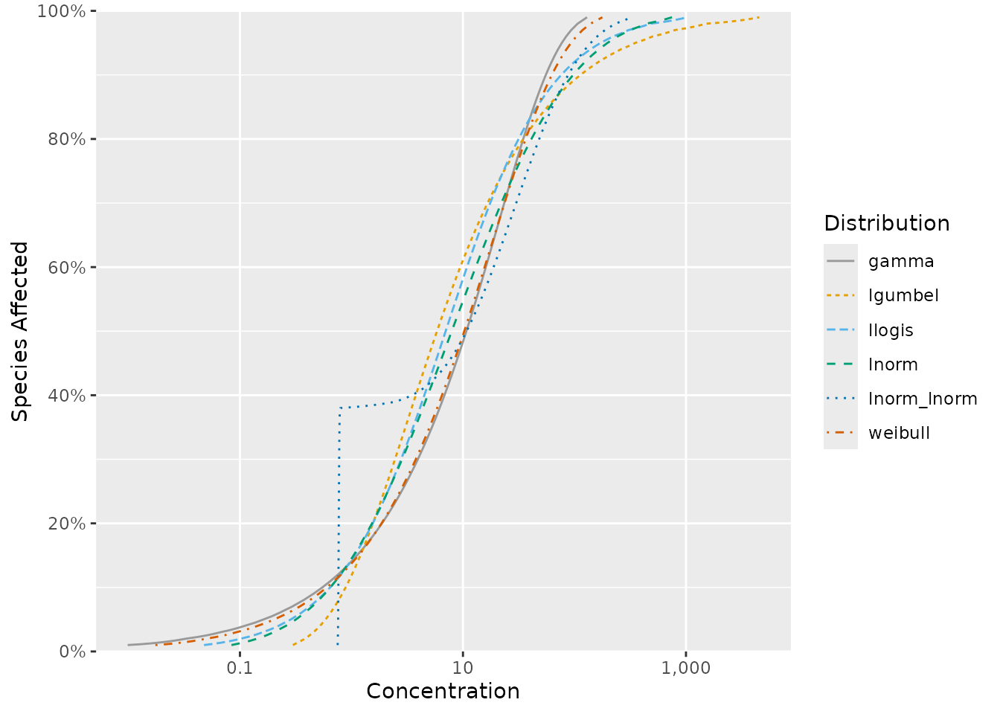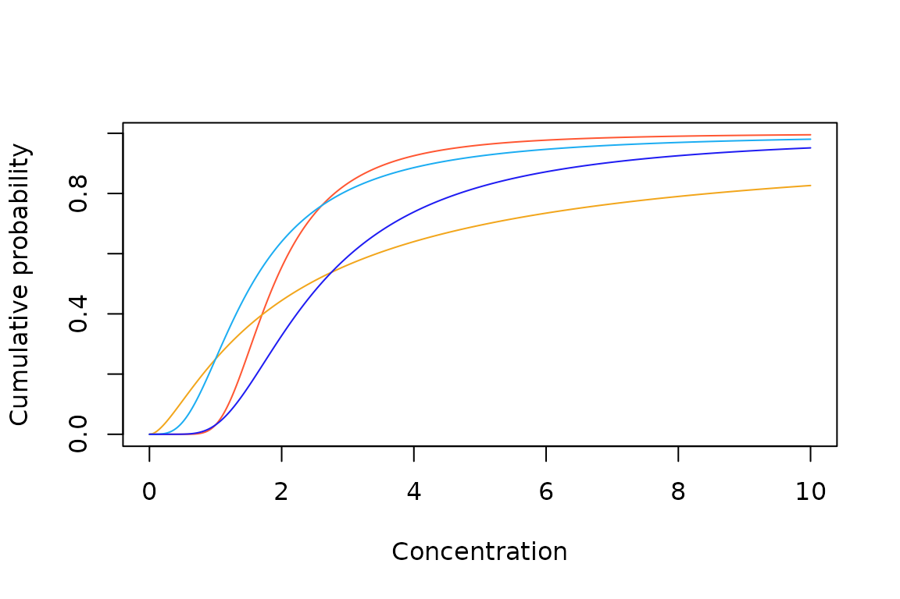
While the Burr type III distribution was adopted as the default distribution in Burrlioz, it is well known (e.g., Tadikamalla (1980)) that the Burr III distribution is related to several other theoretical distributions, some of which only exist as limiting cases of the Burr III, i.e., as one or more of the Burr III parameters approaches either zero or infinity. The Burrlioz software incorporates logic that aims to identify situations where parameter estimates are tending towards either very large or very small values. In such cases, fitting a Burr III distribution is abandoned and one of the limiting distributions is fitted instead.
Specifically:
As c tends to infinity the Burr III distribution tends to the inverse (North American) Pareto distribution (see technical details)
As k tends to infinity the Burr III distribution tends to the inverse Weibull (log-Gumbel) distribution (see technical details)
In practical terms, if the Burr III distribution is fitted and k is estimated to be greater than 100, the estimation procedure is carried out again using an inverse Weibull distribution. Similarly, if c is greater than 80 an (American) Pareto distribution is fitted. This is necessary to ensure numerical stability.
Since the Burr type III, inverse Pareto and inverse Weibull (log
Gumbel) distributions are used by the Burrlioz software, these have been
implemented in ssdtools. However, we have found there are
stability issues with both the Burr type III, as well as the inverse
Pareto distributions, which currently precludes their inclusion in the
default model set (see Fox et al. (2021b),
and below for more details).
Bimodal distributions
The use of statistical mixture-models was promoted by Fox as a convenient and more realistic way of modelling bimodal toxicity data (Fisher et al. 2019). Although parameter heavy, statistical mixture models provide a better conceptual match to the inherent underlying data generating process since they directly model bimodality as a mixture of 2 underlying univariate distributions that represent, for example, different modes of action (Fox et al. 2021a). It has been postulated that a mixture-model would only be selected in a model-averaging context when the fit afforded by the mixture is demonstrably better than the fit afforded by any single distribution. This is a consequence of the high penalty in AICc associated with the increased number of parameters (p in Equation 7 of (Fox et al. 2021a)) and will be most pronounced for relatively small sample sizes.
The TMB version of ssdtools now includes the option of
fitting two mixture distributions, individually or as part of a model
average set. These can be fitted using ssdtools by
supplying the strings “llogis_llogis” and/or “lnorm_lnorm” to the
dists argument in the ssd_fit_dists call.
The underlying code for these mixtures has three components: the likelihood function required for TMB; exported R functions to allow the usual methods for a distribution to be called (p, q and r); and a set of supporting R functions (see Fox et al. (2021b) Appendix D for more details). Both mixtures have five parameters - two parameters for each of the component distributions and a mixing parameter (pmix) that defines the weighting of the two distributions in the ‘mixture.’
Sample lognormal mixture distributions
Sample lognormal mixture probability density and cumulative distribution functions
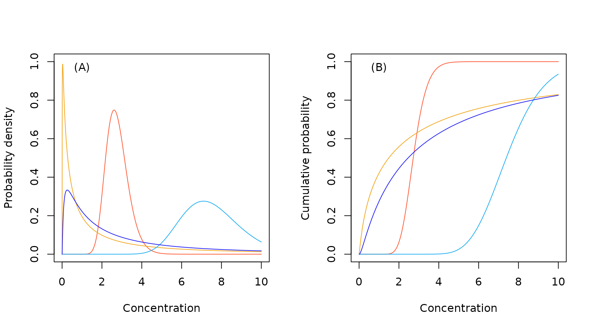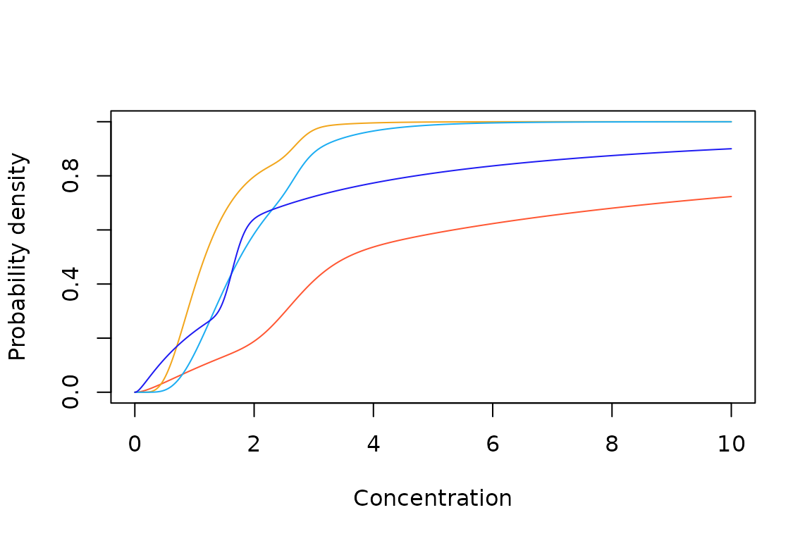
As can be see from the plot above, the mixture distributions
provide a highly flexible means of modelling bimodality in an
emprical SSD. This happens, for example, when the toxicity data for some
toxicant include both animal and plant species, or there are different
modes of action operating. Unfortunately, this increased flexibilty
comes with a high penalty in the model-averaging process. The
combination of small sample sizes and a high parameter count (typically
5 or more) means that mixture distributions will be down-weighted - even
when they do a good job at describing the data. For this reason, when
attempting to model bimodal data, we suggest looking at the fit using
the default set of distributions and then examining the fit with just
one of either the log-normal mixture or the log-logistic mixture. Keep
in mind that this should only be done if the sample size is not
pathologically small. As a guide, Prof. David Fox recommends as an
absolute minimum \(n \ge 3k +
1\) but preferably \(n \ge 5k +
1\) where \(k\) is the number of
model parameters.
Default Distributions
While there is a variety of distributions available in
ssdtools, the inclusion of all of them for estimating a
model-averaged SSD is not recommended.
By default, ssdtools uses the (corrected) Akaike
Information Criterion for small sample size (AICc) as a measure of
relative quality of fit for different distributions and as the basis for
calculating the model-averaged weights. However, the choice of
distributions used to fit a model-averaged SSD can have a profound
effect on the estimated HCx values.
Deciding on a final default set of distributions to adopt using the model averaging approach is non-trivial, and we acknowledge that there is probably no definitive ‘solution’ to this issue. However, the default set should be underpinned by a guiding principle of parsimony, i.e., the set should be as large as is necessary to cover a wide variety of distributional shapes and contingencies but no bigger. Further, the default set should result in model-averaged estimates of HCx values that: 1) minimise bias; 2) have actual coverages of confidence intervals that are close to the nominal level of confidence; 3) estimated HCx and confidence intervals of HCx are robust to small changes in the data; and 4) represent a positively continuous distribution that has both right and left tails.
The ssdtools development team has undertaken extensive
simulation studies, as well as some detailed technical examinations of
the various candidate distributions to examine issues of bias, coverage
and numerical stability. A detailed account of our findings can be found
in our report (Fox et al. 2021b) and are
not repeated in detail here, although some of the issues associated with
individual distributions are outlined below.
Currently recommended default distributions
The default list of candidate distributions in ssdtools
is comprised of the following: log-normal; log-logistic; gamma; inverse
Weibull (log-Gumbel); Weibull; mixture of two log-normal
distributions
The default distributions are plotted below with a mean of 2 and standard deviation of 2 on the (natural) log concentration scale or around 7.4 on the concentration scale.
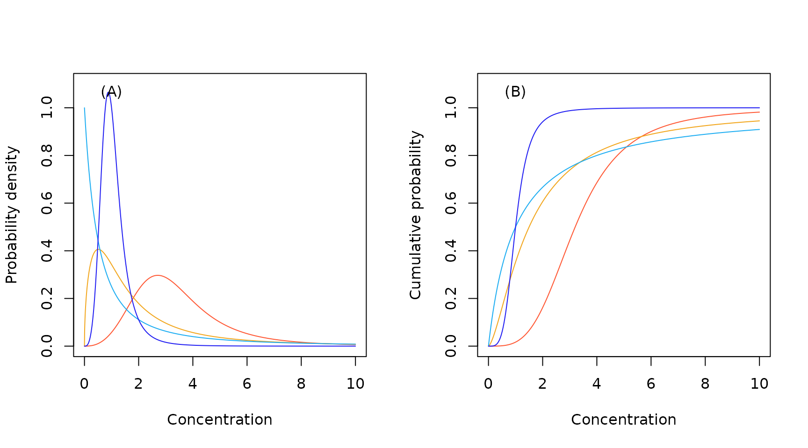
Distributions currently implemented in ssdtools
Burr Type III distribution
The Burr Type 3 is a flexible three parameter distribution can be
fitted using ssdtools by supplying the string
burrIII3 to the dists argument in the
ssd_fit_dists call.
See above for details
The Burr family of distributions has been central to the
derivation of guideline values in Australia and New Zealand for over 20
yr (Fox et al. 2021a). While offering a
high degree of flexibility, experience with these distributions during
that time has repeatedly highlighted numerical stability and convergence
issues when parameters are estimated using maximum likelihood (Fox et al. 2021a). This is thought to be due to
the high degree of collinearity between parameter estimates and/or
relatively flat likelihood profiles (Fox et al.
2021a), and is one of the motivations behind the logic coded into
Burrlioz to revert to either of the two limiting distributions. Burr
Type 3 distribution is not currently one of the recommended
distributionsin the default model set. This is because of 1) the
convergence issues associated with the Burr Type 3 distribution, 2) the
fact that reverting to a limiting two parameter distribution does not
fit easily within a model averaging framework, and 3) that one of the
two limiting distributions (the inverse Pareto, see below) also has
estimation and convergence issues.
Log-normal
The log-normal distribution is a commonly used distribution in the natural sciences - particularly as a probability model to describe right (positive)-skewed pehnomena such as concentration data.
A random variable, \(X\) is lognormally distributed if the logarithm of \(X\) is normally distributed. The pdf of \(X\) is given by
The lognormal distribution was selected as the starting distribution
given the data are for effect concentrations. The log-normal
distribution can be fitted using ssdtools supplying the
string lnorm to the dists argument in the
ssd_fit_dists call.
Sample lognormal probability density and cumulative distribution functions
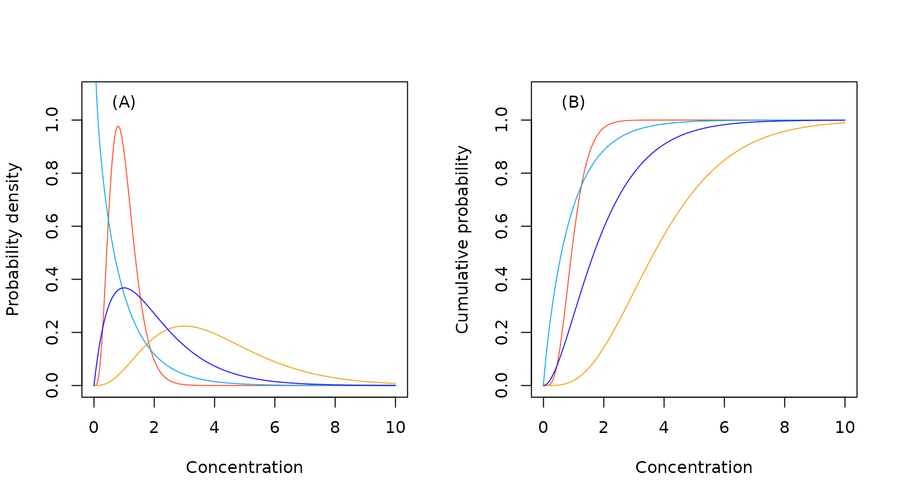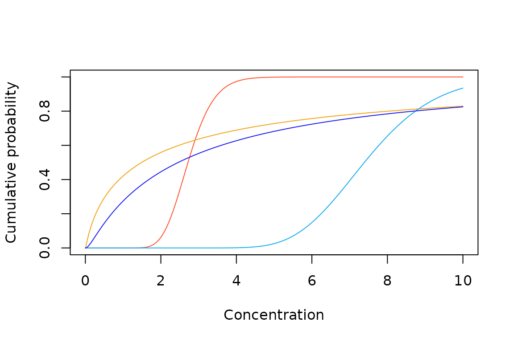
Log-logistic distribution
Like the lognormal distribution, the log-logistic is similarly defined, that is: if \(X\) has a log-logistic distribution, then \(Y = \ln (X)\) has a logistic distribution.
letting \(\mu = \ln \left(
\alpha \right)\) and \(s =
\frac{1}{\beta }\) we have:
The log-logistic distribution is often used as a candidate SSD
primarily because of its analytic tractability (Aldenberg and Slob 1993). We included it
because it has wider tails than the log-normal and because it is a
specific case of the more general Burr family of distributions Burr (1942). The log-logistic distribution can
be fitted using ssdtools by supplying the string
lnorm to the dists argument in the
ssd_fit_dists call.
Sample Log-logistic probability density and cumulative distribution functions
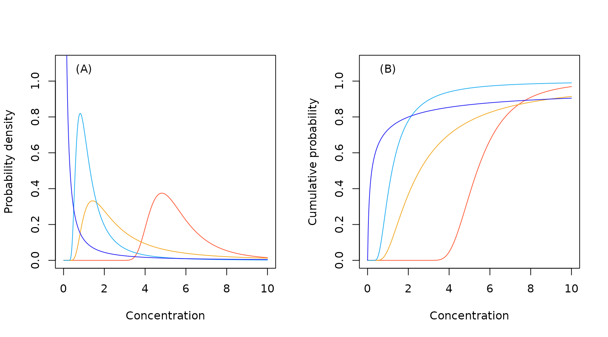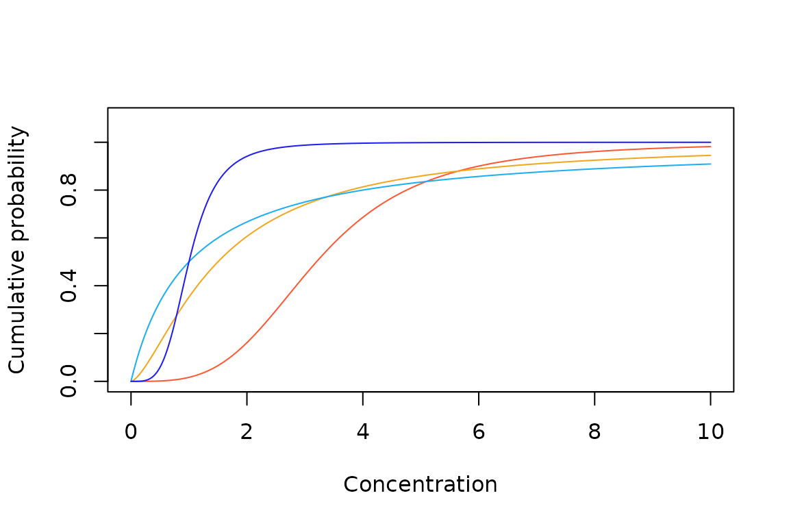
Gamma distribution
The two-parameter gamma distribution has the following pdf and cdf.
where \(\Gamma
\left( \cdot \right)\) is the gamma function (in
R this is simply gamma(x)) and \(\gamma \left( \cdot \right)\) is the
(lower) incomplete gamma function \[\gamma \left( {x,a} \right) = \int\limits_0^x
{{t^{a - 1}}} \,{e^{ - t}}\,dt\] (this can be computed using the
gammainc function from the pracma package in
R).
For use in modeling species sensitivity data, the gamma distribution has two key features that provide additional flexibility relative to the log-normal distribution: 1) it is asymmetrical on the logarithmic scale; and 2) it has wider tails.
The gamma distribution can be fitted using ssdtools by
supplying the string “gamma” to the dists argument in the
ssd_fit_dists call.
Sample gamma probability density and cumulative distribution functions
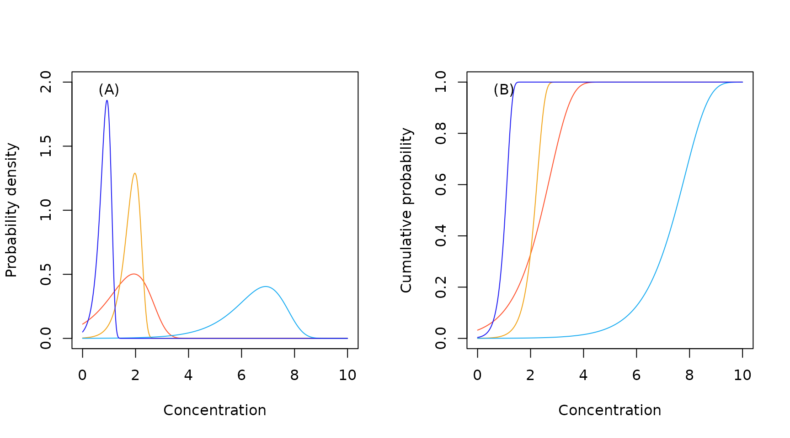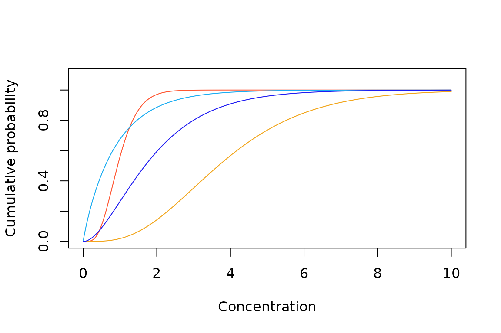
Log-gumbel (inverse Weibull) distribution
The log-gumbel distribution is a two-parameter distribution commonly used to model extreme values.
The log-gumbel distribution can be fitted using ssdtools
by supplying the string lgumbel to the dists
argument in the ssd_fit_dists call.
The two-parameter log-gumbel distribution has the following pdf and cdf:
Sample log-Gumbel probability density and cumulative distribution functions
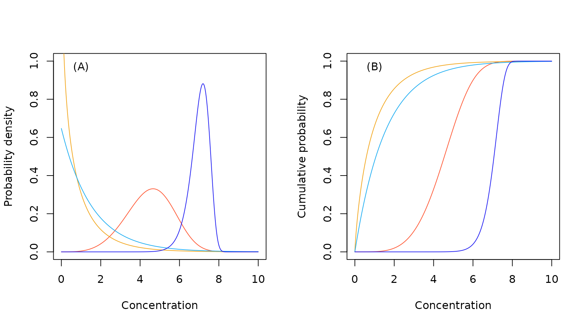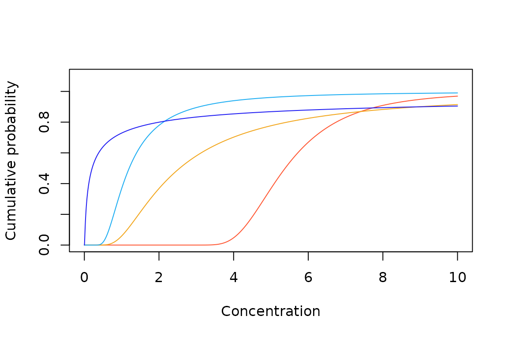Gompertz distribution
The Gompertz distribution is a flexible distribution that exhibits both positive and negative skewness.
The Gompertz distribution can be fitted using ssdtools
by supplying the string gompertz to the dists
argument in the ssd_fit_dists call.
We condiser two parameterisations of the Gompertz distribution.The
first, as given in Wikipedia
and also used in ssdtools [Gompertz] has the following
pdf and cdf:
The second parameterisation in which the product \(b\eta\) in the formulae above is replaced by the parameter \(a\) giving:
Sample Gompertz probability density and cumulative distribution functions
The Gompertz distribution is available in ssdtools,
however parameter estimation can be somewhat unstable (Fox et al. 2021b), and for this reason it is
not currently included in the default set.
Weibull distribution
The inclusion of the Weibull distribution and inverse Pareto
distribution (see next) in ssdtools was primarily
necessitated by the need to maintain consistency with the calculations
undertaken in Burrlioz. As mentioned earlier, both the
Weibull and inverse Pareto distributions arise as limiting
distributions when the Burr parameters \(c\) and \(k\) tend to either zero and/or infinity in
specific ways.
The two-parameter Weibull distribution has the following pdf and cdf:
The Weibull distribution can be fitted in ssdtools by
supplying the string weibull to the dists
argument in the ssd_fit_dists call.
Sample Weibull probability density and cumulative distribution functions
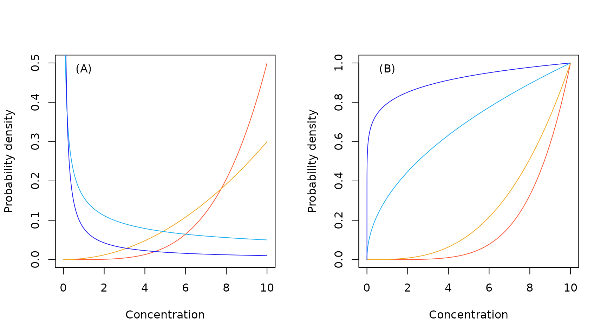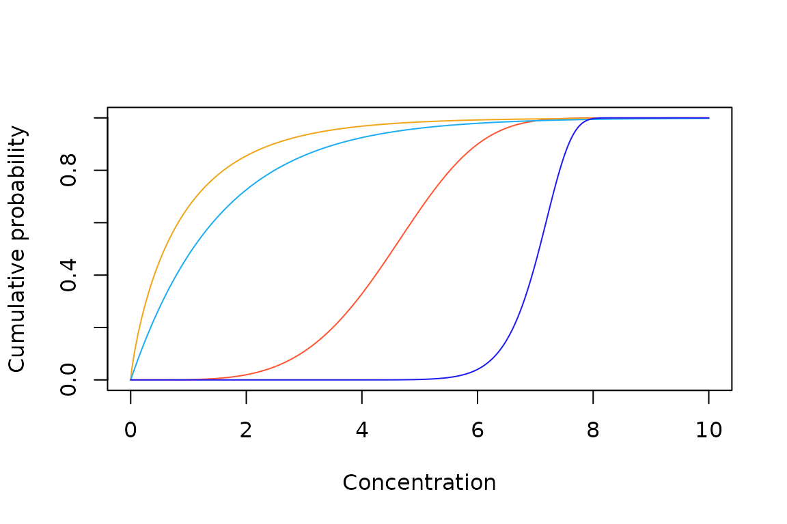
Inverse Pareto distribution
The inverse Pareto distribution can be fitted using
ssdtools by supplying the string invpareto to
the dists argument in the ssd_fit_dists
call.
While the inverse Pareto distribution is implemented in the
Burrlioz 2.0 software, it is important to understand that
it is done so only as one of the limiting Burr distributions (see technical
details). The inverse Pareto is not offered as a stand-alone option
in the Burrlioz 2.0 software. We have spent considerable
time and effort exploring the properties of the inverse Pareto
distribution, including deriving bias correction equations and
alternative methods for deriving confidence intervals (Fox et al. 2021b). This work has substantial
value for improving the current Burrlioz 2.0 method, and
our bias corrections should be adopted when deriving HCx
estimates from the inverse Pareto where parameters have been estimated
using maximum likelihood.
As is the case with the Burrlioz 2.0 software, we have
decided not to include the inverse Pareto distribution in the default
candidate set in ssdtools although it is offered ass a
user-selectable distribution to use in the model-fitting process.
As with many statistical distributions, different ‘variants’ exist. These ‘variants’ are not so much different distributions as they are simple re-parameterisations. For example, many distributions have a scale parameter, \(\beta\) and some authors and texts will use \(\beta\) while others use \(\frac{1}{\beta }\). An example of this re-paramterisation was given above for the Gompertz distribution. While the choice of mathematical representation may be purely preferential, it is sometimes done for mathematical convenience. For example, Parameterisation I of the Gompertz distribution above was obtained by letting \(a = b\eta\) in Parameterisation II. This re-expression involving parameters \(b\) and \(\eta\) would be particularly useful when trying to fit a distribution for which one of \(\left\{ {b,\,\eta } \right\}\) was very small and the other was very large.
It has already been noted that the particular parameterisation of the
(Inverse)Pareto distribution used in both Burrlioz 2.0 and
ssdtools was not a matter of preference,
but rather was dictated by mathematical considerations which
demonstrated convergence of the Burr distribution to one specific
version of the (Inverse)Pareto distribution. While the mathematics
provides an elegant solution to an otherwise problematic situation, this
version of the (Inverse)Pareto distribution is not particularly use as a
stand-alone distribution for fitting an SSD (other than as a special,
limiting case of the Burr distribution).
The two versions of the (Inverse)Pareto distribution are known as the European and North American versions. Their pdfs and cdfs are given below.
Pareto distribution \[\begin{array}{l} \begin{array}{*{20}{c}} {{f_X}\left( {x;\alpha ,\beta } \right) = \alpha {\kern 1pt} {\beta ^\alpha }{\kern 1pt} {x^{ - \left( {\alpha + 1} \right)}}}&; \end{array}\quad x > \beta ;\;\alpha ,\beta > 0\\ \begin{array}{*{20}{c}} {{F_X}\left( {x;\alpha ,\beta } \right) = 1 - {{\left( {\frac{\beta }{x}} \right)}^\alpha }}&; \end{array}\quad x > \beta ;\;\alpha ,\beta > 0 \end{array}\] Now, if X has the Pareto distribution above, then \[Y = \frac{1}{X}\] has an inverse Pareto distribution.
inverse Pareto distribution \[\begin{array}{l} \begin{array}{*{20}{c}} {{g_Y}\left( {y;\alpha ,\beta } \right) = \alpha {\kern 1pt} {\beta ^\alpha }{\kern 1pt} {y^{\alpha - 1}}}&; \end{array}\quad y \le \frac{1}{\beta };\;\;\alpha ,\beta > 0\\ \begin{array}{*{20}{c}} {{G_Y}\left( {y;\alpha ,\beta } \right) = {{\left( {\beta \,y} \right)}^\alpha }}&; \end{array}\quad 0 0 \end{array}\]
Importantly, we see that the North American versions
of these distributions are bounded with the Pareto
distribution bounded below by \(\beta\) and the inverse Pareto distribution
bounded above by \(\frac{1}{\beta
}\).
As an aside, the mle of \(\beta\) in the Pareto distribution is \[\hat \beta = \min \left\{ {{X_1}, \ldots ,{X_n}}
\right\}\] and the mle of \(\frac{1}{\beta }\) in the inverse Pareto is
\[\begin{array}{*{20}{l}}
{\tilde \beta = \max \left\{ {{Y_1}, \ldots ,{Y_n}} \right\}}\\
{\quad = \max \left\{ {\frac{1}{{{X_1}}}, \ldots ,\frac{1}{{{X_n}}}}
\right\} = \frac{1}{{\min \left\{ {{X_1}, \ldots ,{X_n}} \right\}}}}\\
{\quad = \frac{1}{{\hat \beta }}}
\end{array}\].
and the mle of \(\alpha\) is: \[\hat \alpha = {\left[ {\ln \left( {\frac{g}{{\hat \beta }}} \right)} \right]^{ - 1}}\] where \(g\) is the geometric mean: \[g = {\left[ {\prod\limits_{i = 1}^n {{X_i}} } \right]^{\frac{1}{n}}}\]
Thus, it doesn’t matter whether you’re fitting a Pareto or inverse Pareto distribution to your data - the parameter estimates are the same.
Because it is bounded, the North American version of the (Inverse)Pareto distribution is not useful as a stand-alone SSD - more so for the inverse Pareto distribution since it is bounded from above.
Sample North American Pareto probability density and cumulative distribution functions
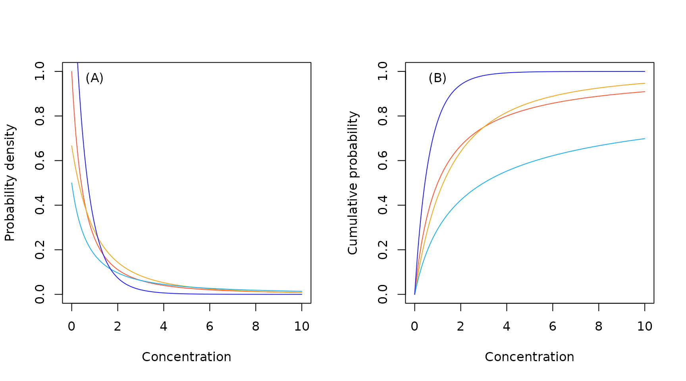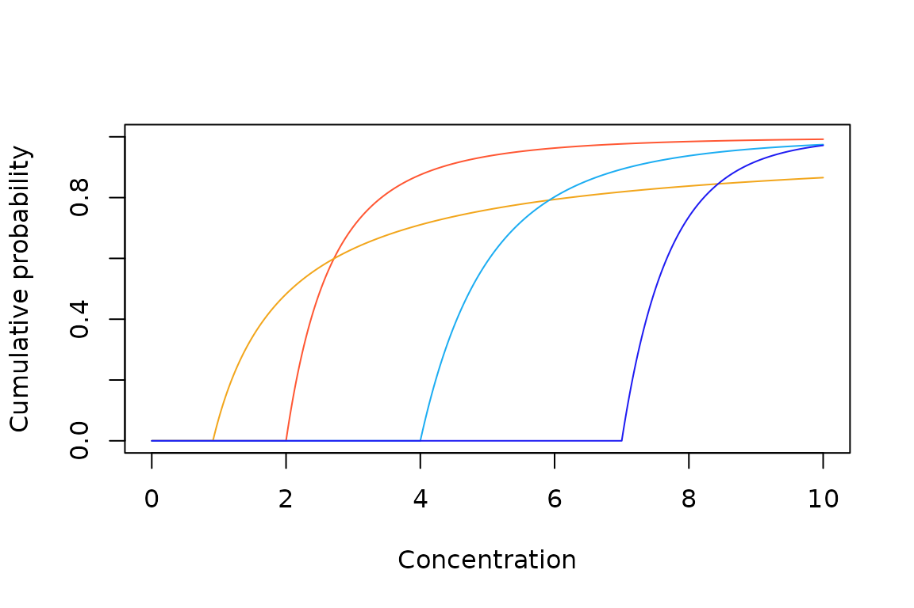
We see from the pdf plots that the
Sample North American inverse Pareto probability density and cumulative distribution functions
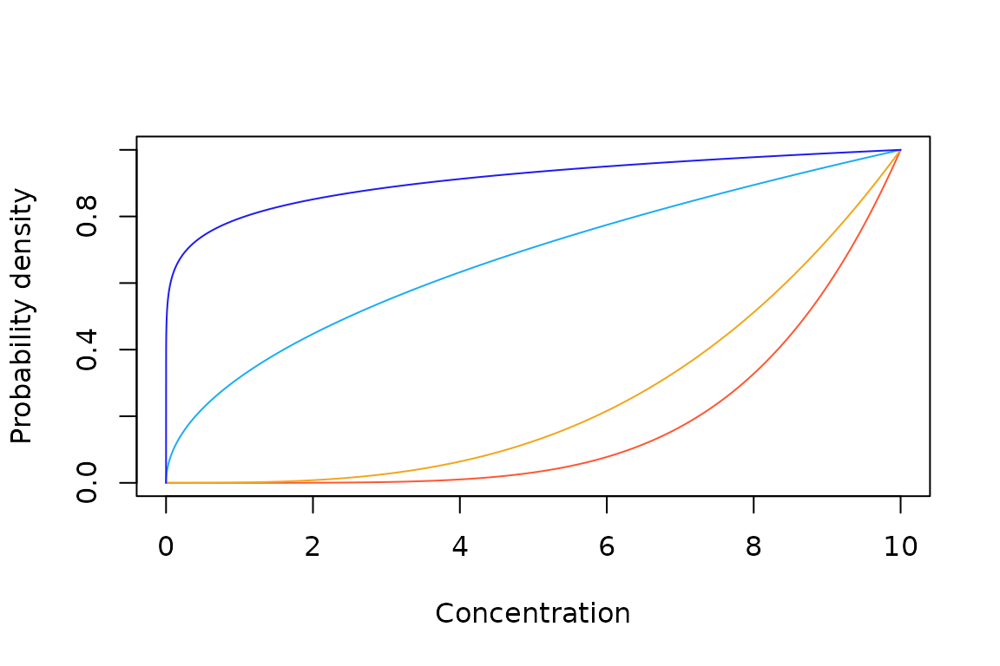
The alternative, European version of the inverse Pareto distribution is a more realistic candidate.
Pareto distribution \[\begin{array}{l} \begin{array}{*{20}{c}} {{f_X}\left( {x;\alpha ,\beta } \right) = \frac{{\alpha \,\beta \,{x^{\alpha - 1}}}}{{{{\left( {x + \beta } \right)}^{\alpha + 1}}}}}&; \end{array}\quad x,\;\alpha ,\beta > 0\\ \begin{array}{*{20}{c}} {{F_X}\left( {x;\alpha ,\beta } \right) = 1 - {{\left( {\frac{\beta }{{x + \beta }}} \right)}^\alpha }}&; \end{array}\quad x,\;\alpha ,\beta > 0 \end{array}\] Now, if X has the Pareto distribution above, then \[Y = \frac{1}{X}\] has an inverse Pareto distribution.
inverse Pareto distribution \[\begin{array}{l} \begin{array}{*{20}{c}} {{g_Y}\left( {y;\alpha ,\beta } \right) = \frac{{\alpha {\kern 1pt} {\beta ^\alpha }{\kern 1pt} {y^{\alpha - 1}}}}{{{{\left( {1 + \beta y} \right)}^{\alpha + 1}}}}}&; \end{array}\quad y,\;\alpha ,\beta > 0\\ \begin{array}{*{20}{c}} {{G_Y}\left( {y;\alpha ,\beta } \right) = {{\left( {\frac{{\beta y}}{{1 + \beta y}}} \right)}^\alpha }}&; \end{array}\quad y,\;\alpha ,\beta > 0 \end{array}\]
We note in passing that both versions of these Pareto and
inverse Pareto distrbutions are availabale in R. For
example, the Rpackage extraDistr has North
American versions, while the actuar package has European
versions.
Sample European Pareto probability density and cumulative distribution functions
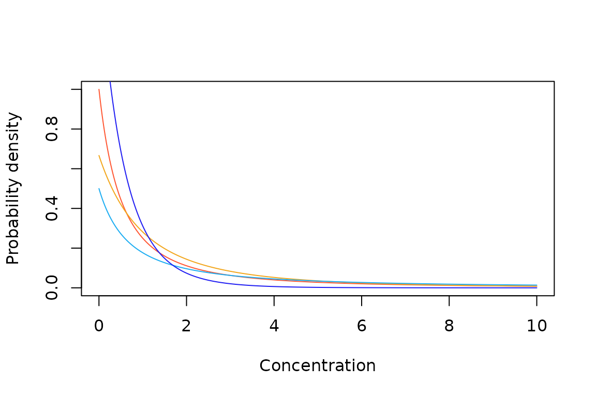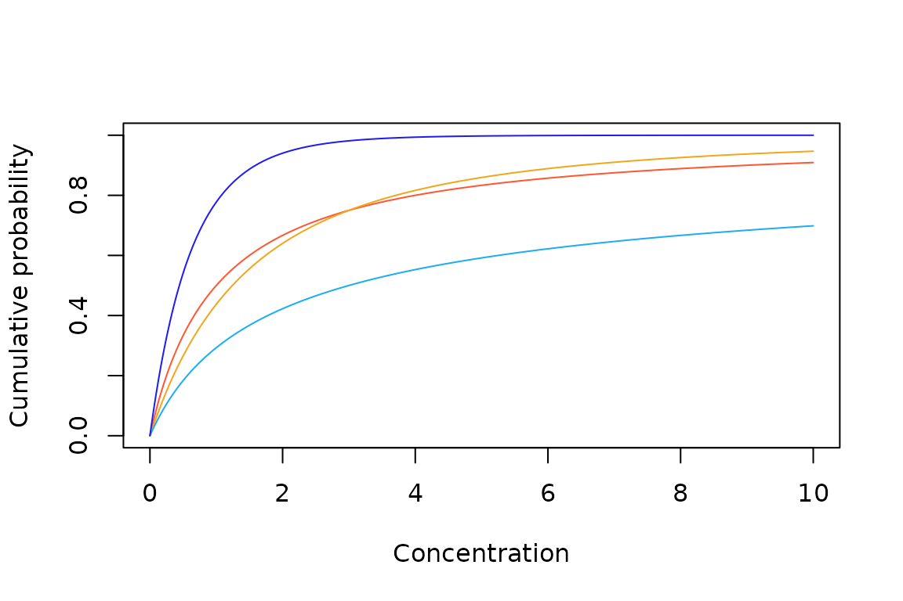
Sample European inverse Pareto probability density and cumulative distribution functions
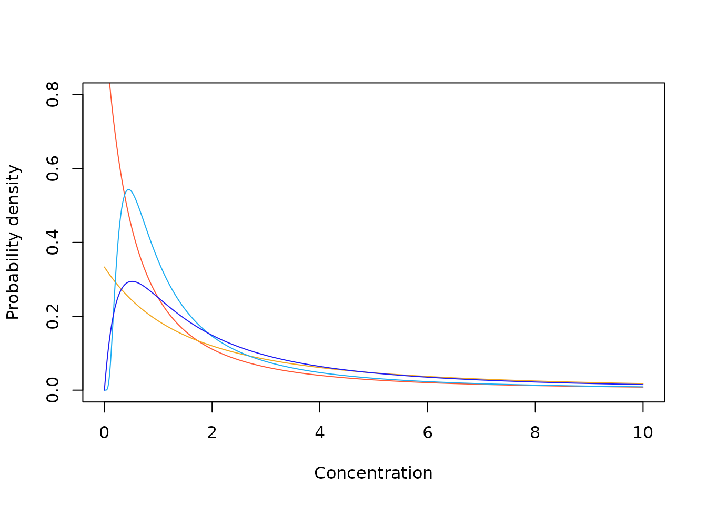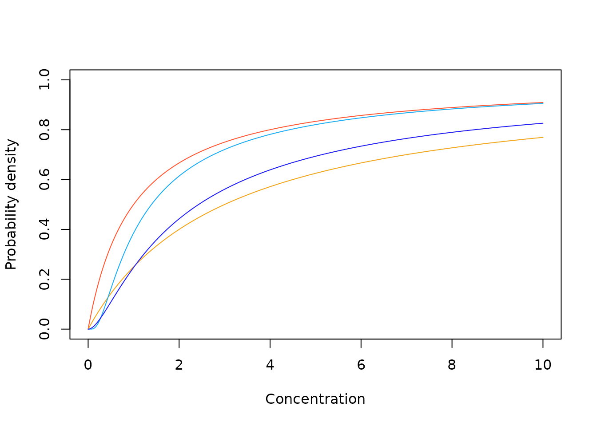
Inverse Weibull distribution (see log-Gumbel, above)
The inverse Weibull is mathematically equivalent to the log-Gumbel distribution described above. While which is also a limiting distribution of the Burr Type 3, this distribution does not show the same instability issues, and is unbounded to the right. It therefore represents a valid SSD distribution and is included in the default model set as a distribution in its own right.
The inverse Weibull (log-Gumbel) distribution can be fitted in
ssdtools by supplying the string lgumbel to
the dists argument in the ssd_fit_dists
call.
Relationships among distributions in ssdtools
NOTES
In the diagram below, \(X\) denotes the random variable in the box at the beginning of the arrow and the expression beside the arrow indicates the mathematical transformation of \(X\) such that the resultant transformed data has the distribution identified in the box at the end of the arrow.
Reciprocal transformations (\(\frac{1}{X}\)) are bi-directional (\(\leftrightarrow\)).
Although the negative exponential distribution is not explicitly included in
ssdtools, it is a special case of the gamma distribution with \(c=1\). It is included in this figure as it is related to other distributions that are included inssdtools.The European versions of the Pareto and inverse Pareto distributions are unbounded; the North American versions are bounded.

References
Licensing
Copyright 2018-2024 Province of British Columbia
Copyright 2021 Environment and Climate Change Canada
Copyright 2023-2024 Australian Government Department of Climate Change,
Energy, the Environment and Water
The documentation is released under the CC BY 4.0 License
The code is released under the Apache License 2.0